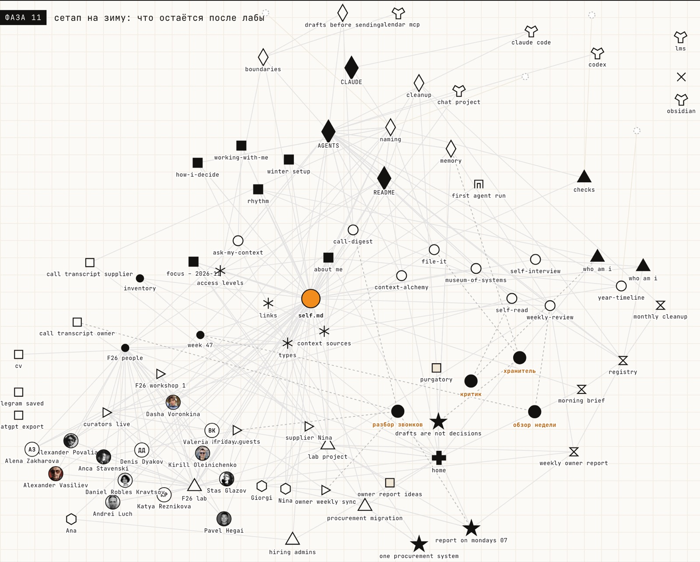

AI MindsetFALL ’26 LAB · F26
self-harness
папка, в которой агент знает тебя: self.md в центре, онтология личного контекста и люди лабы вокруг
собратьнаучитьотпуститьпользоваться
папка, в которой агент знает тебя: self.md в центре, онтология личного контекста и люди лабы вокруг

12 фаз · 82 файла · 9 практик